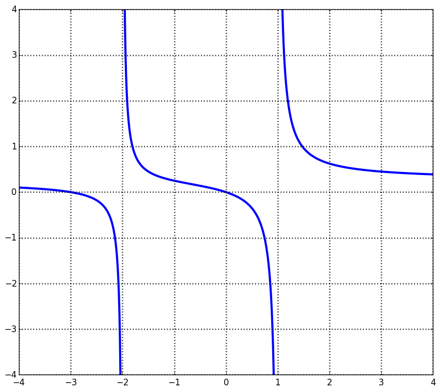
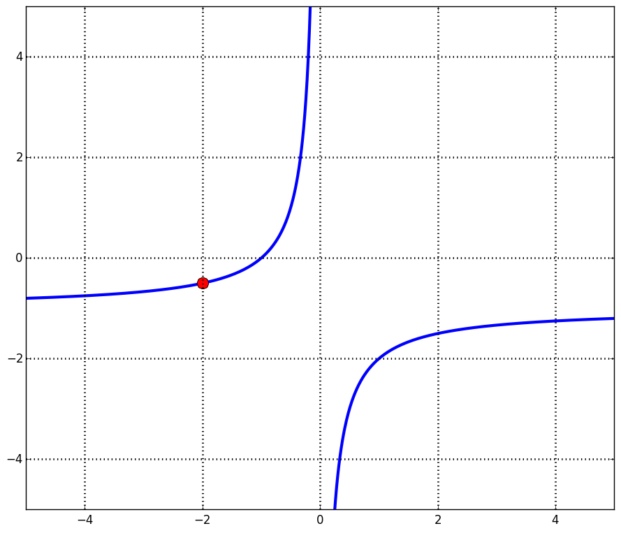
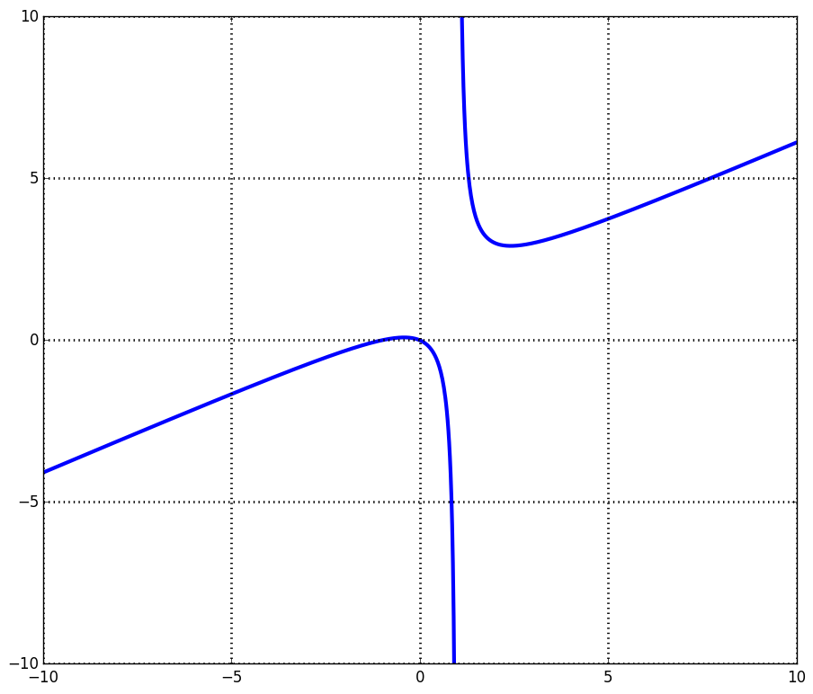

| « 3.6 | up | 3.8 » |
3.7 — Rational Functions
A rational function is one of the form: $$ f(x) = \frac{g(x)}{h(x)} $$ where $g$ and $h$ are polynomials. The domain of a rational function is all real numbers except those that make the denominator, $h(x)$, zero.
Find the domain of the following function:
$$
f(x) = \frac{x^4-6x+13}{x^2-x-12}
$$
$(-\infty, -3) \cup (-3, 4) \cup (4, \infty)$
Find the domain of the rational function with the following graph:

$(-\infty, -2) \cup (-2, 1) \cup (1, \infty)$
Vertical Asymptotes and Jump Discontinuities
Rational functions often have vertical asymptotes (as seen from the previous example).For a function $f(x)$, a vertical asymptote is said to occur at a location, $x=c$, if $f(x) \rightarrow \infty$ or $f(x) \rightarrow -\infty$ as $x \rightarrow c$.
Consider a rational function, $f(x) = g(x) / h(x)$. Then $f(x)$ has a vertical asymptote at a location $x=c$ if:
- $h(c) = 0$ and $g(c) \neq 0$
- $h(c) = 0$ and $g(c) = 0$, but the multiplicity is greater in $h(x)$
On the other hand, if $h(c) = 0$ and $g(c) = 0$ and the multiplicity of the root is the same for both, then the rational function, $f(x)$, has a jump discontinuity at $x=c$. This is a small hole in the graph at $x=c$.
Find any vertical asymptotes, jump discontinuities, and roots of:
$$
f(x) = \frac{x^2 + x -2}{x^2-x}
$$
vertical asymptote: $x=0$
root: $x=-2$
jump: $x=1$
root: $x=-2$
jump: $x=1$
Find any vertical asymptotes, jump discontinuities, and roots of:
$$
f(x) = \frac{2x^3 - 8x}{2x-x^2}
$$
vertical asymptote: none
root: $x=-2$
jump: $x=0,2$
root: $x=-2$
jump: $x=0,2$
Horizontal asymptotes
For a function $f(x)$, a horizontal asymptote is said to occur at a location, $y=c$, if $x \rightarrow \infty$ or $x \rightarrow -\infty$ as $f(x) \rightarrow c$.Consider a rational function, $f(x) = g(x) / h(x)$, with no common factors between $g$ and $h$. If there are common factors, we note that this means we have a jump discontinuity at that location, and remove these factors from $g$ and $h$. Regarding horizontal asymptotes, we have the following:
- If degree$(g) \lt $ degree$(h)$, there is a horizontal asymptote at $y=0$.
- If degree$(g) \gt $ degree$(h)$, there is no horizontal asymptote.
- If degree$(g) = $ degree$(h)$, there is a horizontal asymptote at $y=$ coefficient of largest power of $g(x)$ / coefficient of the largest power of $h(x)$.
Determine all the horizontal asymptotes of $f(x) = \frac{x(x+2)}{1-x^2}$
$y=-1$
Which statements are false for the function, $f(x) = \frac{x-x^2}{x(x-2)}$?
- The $y$-intercept is $-1$.
- The domain of $f$ is $(\infty, 0) \cup (0, 2) \cup (2, \infty)$.
- The graph has one horizontal asymptote at $y=-1$.
- The $x$-intercept of the graph is $1$.
- The graph of $f$ has one vertical asymptote at $x=2$.
- False
- True
- True
- True
- True
Which is the equation for the following graph?

- $y=\frac{(x+1)(x+2)}{x^2+2x}$
- $y=-\frac{(x+1)(x+2)}{x^2-2x}$
- $y=-\frac{(x+1)(x+2)}{x^2+2x}$
- $y=-\frac{(x+1)(x+2)}{-x-1}$
Option 3.
Oblique Asymptotes
For a rational function, $f(x) = g(x) / h(x)$, with no common factors, we stated that there is no horizontal asymptote if degree$(g) \gt $ degree$(h)$. However, in the special case that degree$(g) = $ degree$(h)+1$, there is what is called an oblique asymptote.An oblique asymptote occurs when $f(x) \rightarrow mx+b$ for some $m,b$ as $x \rightarrow \infty$ or $x \rightarrow -\infty$.
In the case that an oblique asymptote exists, it is given by the quotient of the polynomial long division process.

The above is an example of a rational function with an oblique asymptote. It is the function, $$ f(x) = \frac{x^3-x}{2(x^2-2x+1)} $$ The oblique asymptote is the line, $$ y = \frac{1}{2}x + 1 $$
Find the equation of the oblique asymptote for the function, $f(x) = \frac{x^2-7x-6}{x-6}$.
$y = x - 1$
Find the equation of the oblique asymptote for the function, $f(x) = \frac{2x^2}{x-1}$.
$y = 2x + 2$